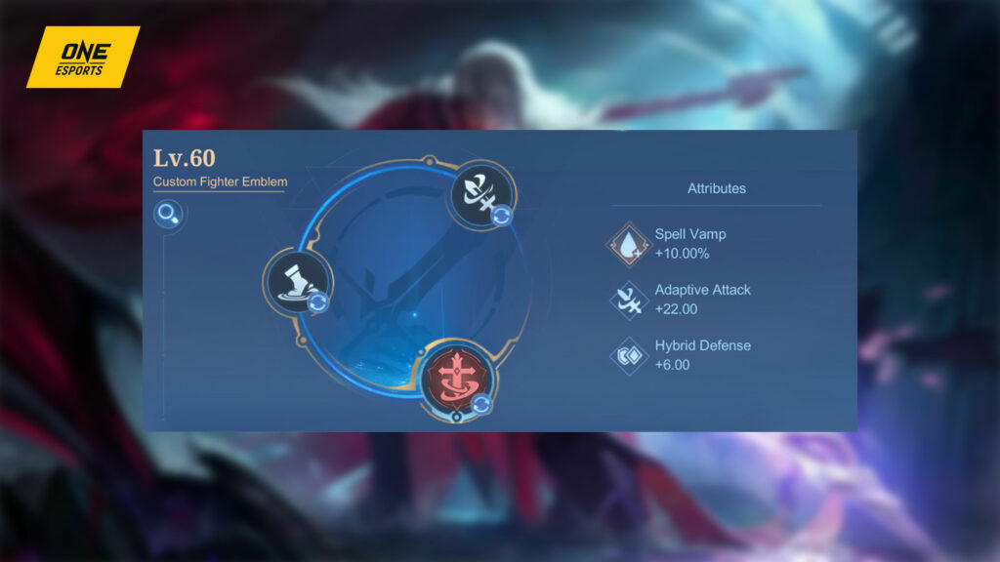
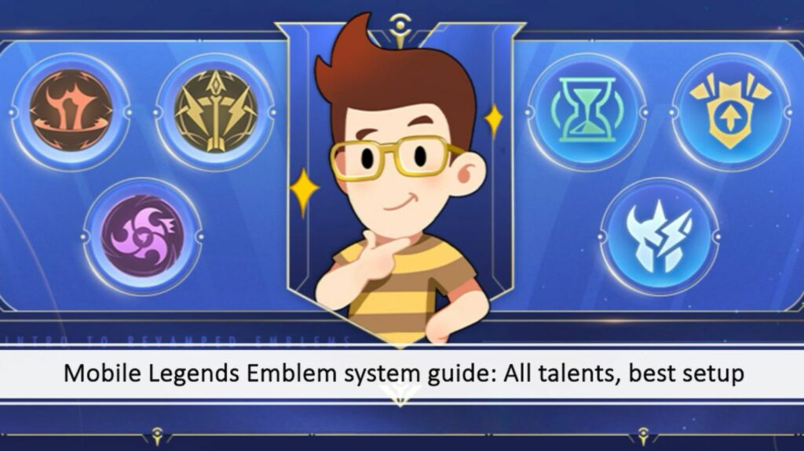
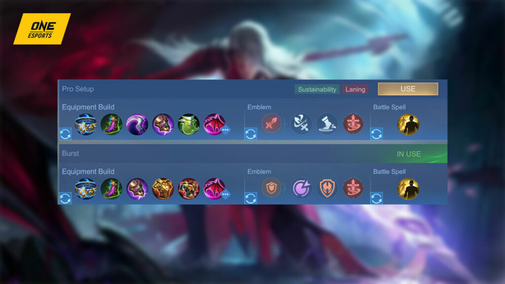
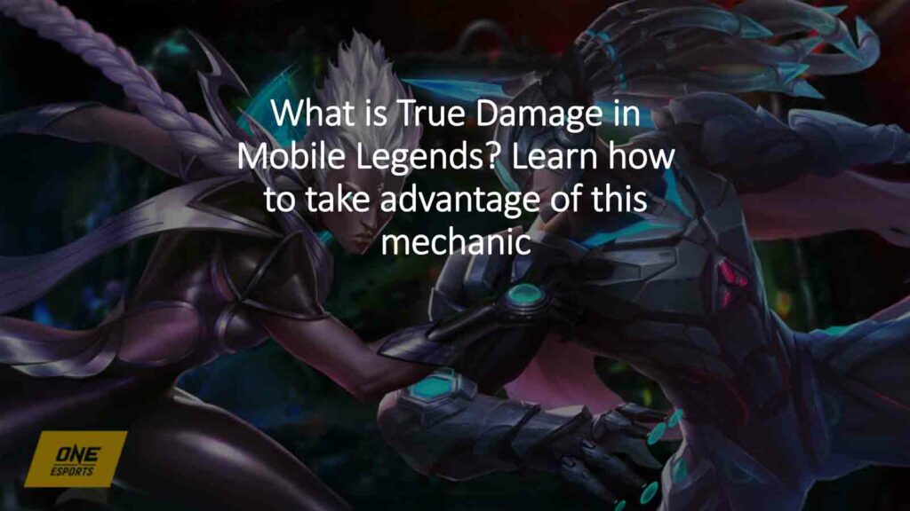
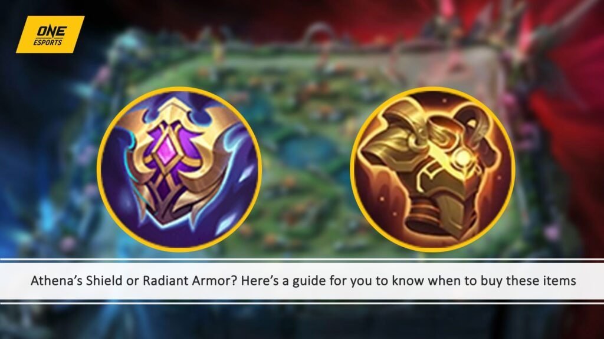
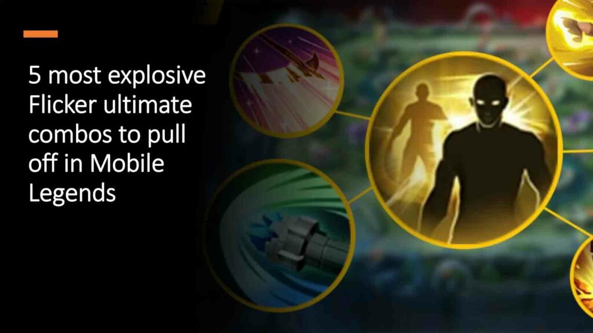

To make the most of his abilities, it’s recommended to use Petrify as a Battle Spell since its stun effect
activates his Demon Gaze passive.
This allows him to extend his combo with the extra stun and deal more damage to his enemies.
However, if you plan to play him as a roamer, it might be a good idea to go for Vengeance instead. This
Battle Spell enhances his survivability, ensuring that he lasts long in team fights after using Final Slash
to start a team fight.

Credit: ONE Esports
For his emblem, you can choose the Tank emblem if you are playing as a roamer or the Fighter emblem if
you are in the EXP lane.
This allows Novaria to swiftly reposition herself in sticky situations.
When playing Arlott in the side lanes, get Thrill for early game damage, and Wilderness Blessing for
increased Movement Speed in the river and jungle areas. This combination of talents allows you to clear
lanes fast and rotate quickly to other lanes to help out.

Credit: Moonton Games, ONE Esports
Mobile Legends Emblem system guide: All talents and best emblem setup
When playing as a roamer, customize the Tank emblem to get Rupture for early game kiting, and Tenacity
for better survivability on low health.
The best core talent for him regardless of role is Brave Smite since it helps him survive in team fights
with its HP restoration effect. Arlott has low cooldowns on his skills, so it’s ideal to go for spell
vamp emblems.
Arlott best build

Credit: ONE Esports
When playing as an EXP laner, it’s essential to prioritize survivability. Get Thunder Belt early on. It
offers great synergy with Arlott’s skills by providing a mix of tankiness, cooldown reduction, and
additional True Damage with its passive, enhancing your burst potential.

Credit: ONE Esports, Moonton Games
What is True Damage in Mobile Legends? Learn how to take advantage of this mechanic
Follow this up with Hunter Strike to boost your Physical Damage and mobility through its passive. This
passive triggers a Movement Speed boost after hitting enemies, allowing you to be more aggressive in
chasing or escaping.
As you progress to the mid-game, purchase Dominance Ice. This item is vital for controlling enemies by
reducing their healing effects and Attack Speed while giving a decent amount of armor and cooldown
reduction.
Take Oracle to enhance your sustainability. This magic defense item amplifies your shield and
regeneration effects, making you tougher in extended fights.
Finally, Queen’s Wings provides both damage reduction and lifesteal when your health gets low, allowing
you to survive crucial moments and turn fights around.
When playing Arlott as a roamer, get Dominance Ice right after Thunder Belt, then boost your Magic
Defense by getting Athena’s Shield or Radiant Armor.

Credit: ONE Esports
Athena’s Shield or Radiant Armor? Here’s a guide for you to know when to buy these
items
Improve your Physical Defense even more by purchasing Antique Cuirass, then buy Queen’s Wings as your
final item.
The best build for EXP lane Arlott in Mobile Legends
- Tough Boots
- Thunder Belt
- Hunter Strike
- Dominance Ice
- Oracle
- Queen’s Wings
The best build for roam Arlott in Mobile Legends
- Tough Boots
- Thunder Belt
- Dominance Ice
- Athena’s Shield or Radiant Armor
- Antique Cuirass
- Queen’s Wings
Tips and easy combos to learn
During the laning phase, you can start off by using Dauntless Strike to mark minion waves and secure last
hits with Vengeance as you stay ahead of your opponent.
If you’re feeling more aggressive in the laning phase, wait for Demon Gaze to affect the enemy hero
you’re matched against and pounce with Vengeance to get closer. Once you exhaust the mark, use the
Dauntless Strike-Vengeance-Final Slash-Vengeance combo for an easy kill.

Credit: ONE Esports, Moonton
5 most explosive Flicker ultimate combos to pull off in Mobile Legends
During team fights, wait for the enemy to gather together and use Final Slash to line them up in single
file. Then, use Vengeance to deal damage and stun them once again with Dauntless Strike. If you happen
to miss a target, fall back since Arlott is easy to kill once his only mobility skill is on cooldown.